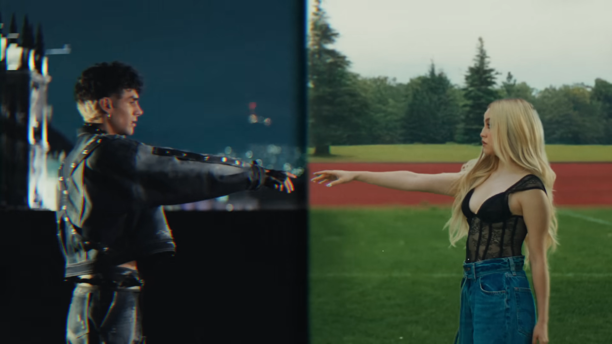

Karol Sevilla é uma atriz e cantora mexicana, nascida em 9 de novembro de 1999, na Cidade do México. Ficou mundialmente conhecida ao interpretar Luna Valente na série da Disney Channel "Soy Luna", papel que a transformou em um ídolo pop para milhões de fãs na América Latina e no mundo. Além da atuação, Karol construiu uma carreira musical sólida, lançando singles próprios e parcerias, como "Una Noche Más", feat. com o cantor Alan Navarro, lançada em dezembro de 2024.
"Una Noche Más" é uma parceria entre Karol Sevilla e o cantor mexicano Alan Navarro, lançada como single em 5 de dezembro de 2024. Na época do lançamento, a música fazia parte do próximo projeto musical de Alan Navarro, sendo o segundo single divulgado dele. O videoclipe oficial, com pouco menos de 3 minutos de duração, foi produzido pela Universal Music Group México.